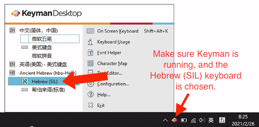

Instructions for installing Keyman and the Hebrew (SIL) keyboard on Windows
Steps to install the keyboard for Windows
Note: The following instructions are for the installation of Hebrew keyboard for Keyman.app on MacOS. If you need to type on Win or mobile devices, please follow the instructions above.
Click this Youtube link to watch the tutorial or follow the steps below.
- Install Keyman and the Hebrew (SIL) keyboard.
- Go to the Hebrew (SIL) keyboard Download page.
- Click the "Install on Windows" (Hebrew (SIL) + Keyman Desktop) button to download the bundle file (.exe file).
- After download, you may double click to install the keyboard to Keyman.
- Make sure the "Keyman" is running and the Hebrew (SIL) keyboard is chosen.
- See screenshot below.
- If you don't have Keyman running, you need to run it first.
- If you don't see the "Hebrew (SIL)" keyboard, you probably downloaded the Keyman without the keyboard. You will need to download the keyboard file and install it.

- Done! You may start using it now! You may test your Hebrew typing at Hebrew Typing Test.
- This page also has some tips for typing Hebrew.
Keyboard Layout
- Please visit this page to see the keyboard layout.
- You may also visit this page to view the keyboard layout (pp. 6–9).
- Note: We will use Keyman app to install the Hebrew (SIL) keyboard. We will not be using the SBL Hebrew keyboard. They have the same SIL layout, but the SBL Hebrew keyboard on Mac has different unicode character values for Sin and Shin. This
may cause some issues.